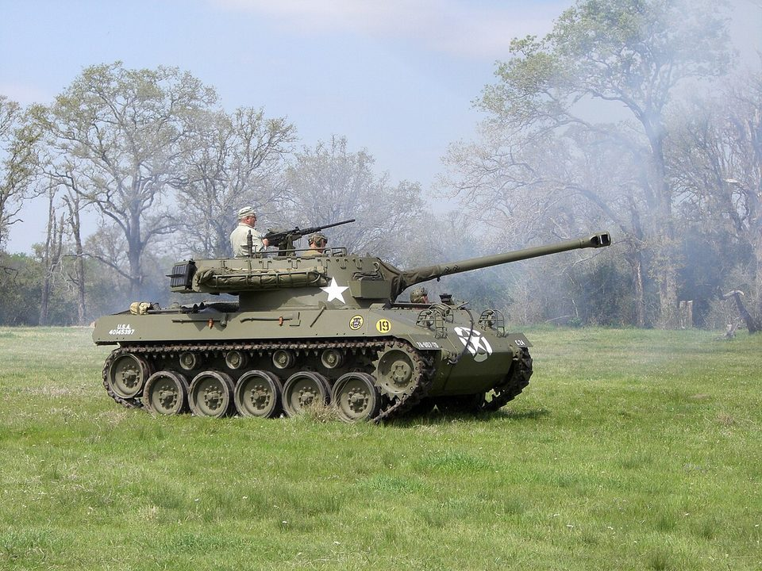
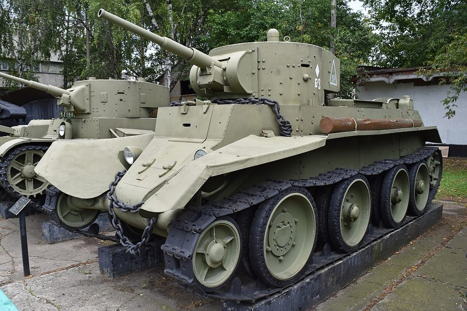

Lista
Los 10 tanques más rápidos
Los carros de combate más rápidos de la enciclopedia, del M18 Hellcat a los carros principales de los años ochenta, con su velocidad máxima en carretera.
Velocidad máxima en carretera según las fichas. Los BT y el M1 Combat Car alcanzaban esas cifras en condiciones ideales; los BT, además, rodando sobre ruedas sin orugas.

1 · Estados Unidos88 km/h
Un cazacarros que cambió casi todo su blindaje por velocidad.

2 · Argentina75 km/h
30 toneladas y 720 CV.

3 · Reino Unido72,5 km/h
Un carro de reconocimiento de solo ocho toneladas.

4 · Unión SoviéticaHasta 72 km/h
Sobre ruedas, sin orugas.

5 · Unión Soviética72 km/h
Sobre ruedas, sin orugas.

6 · Estados Unidos72 km/h
El «coche de combate» de la caballería estadounidense.

7 · Estados Unidos72 km/h
El sucesor cancelado del Sheridan.

8 · Estados UnidosHasta 72 km/h
Velocidad limitada electrónicamente.

9 · Alemania70 km/h
Un motor diésel de 1.500 CV.

10 · Unión Soviética70 km/h
El primer carro soviético de serie con turbina de gas.